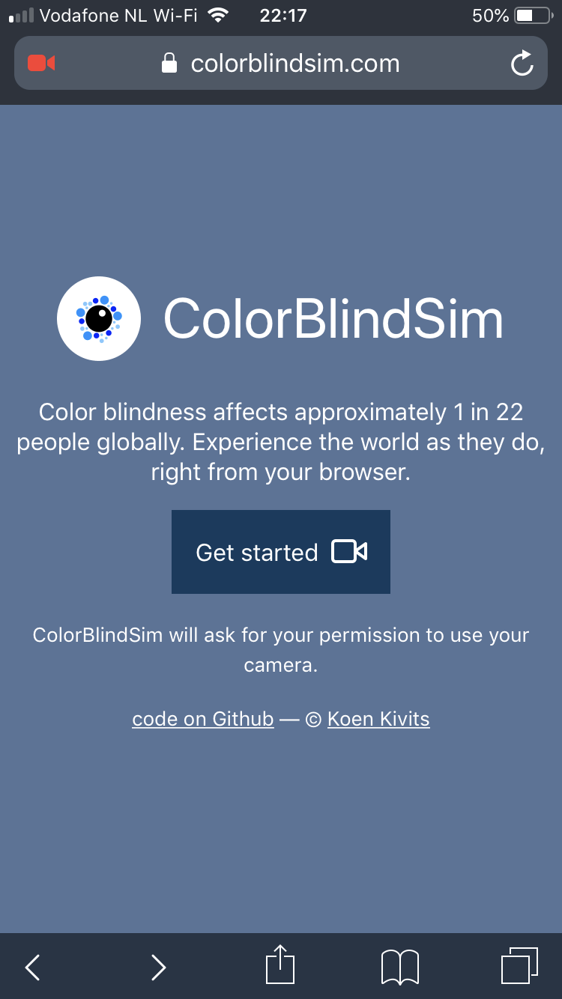
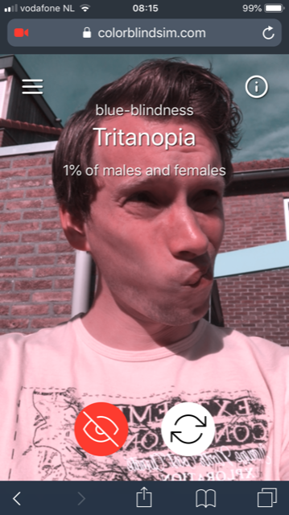
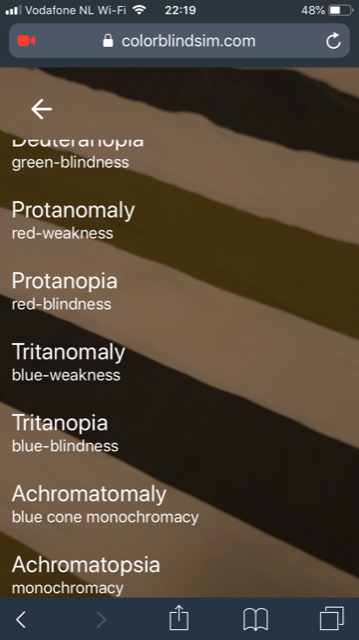

I'm Koen Kivits, web developer at JouwWeb
I'm Koen Kivits, web developer at JouwWeb
github.com/skratchdot/color-blind
blinder.deuteranopia("#42dead"); // --> "#debeb6"
blinder.protanopia('#42dead'); // --> "#d1c4a0"
// ... et cetera
(running stuff on the GPU)
can also do image processing!
let constraints = {
video: { facingMode: "user" }
};
navigator.mediaDevices.getUserMedia(constraints)
.then(function(stream) {
let video = document.createElement('video');
document.body.appendChild(video);
video.srcObject = stream;
video.onloadedmetadata = function() {
video.play();
}
});<video> = ❤️✔️
fast and offline-first
  
39 kilobytes gzipped
(24 kilobytes if you don't count the favicon)